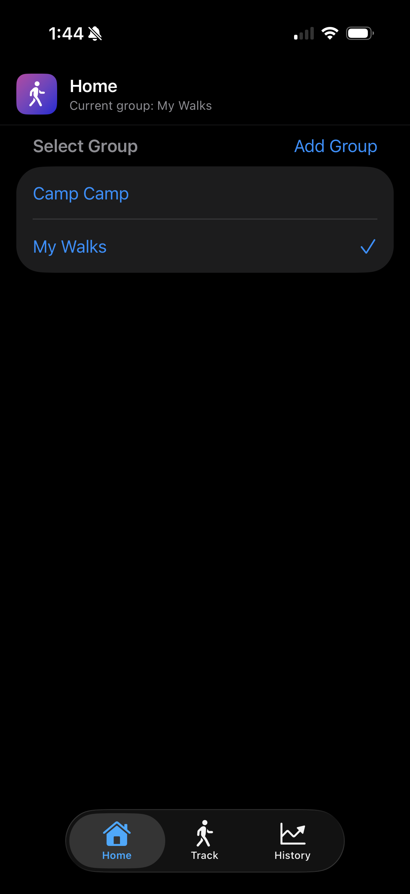
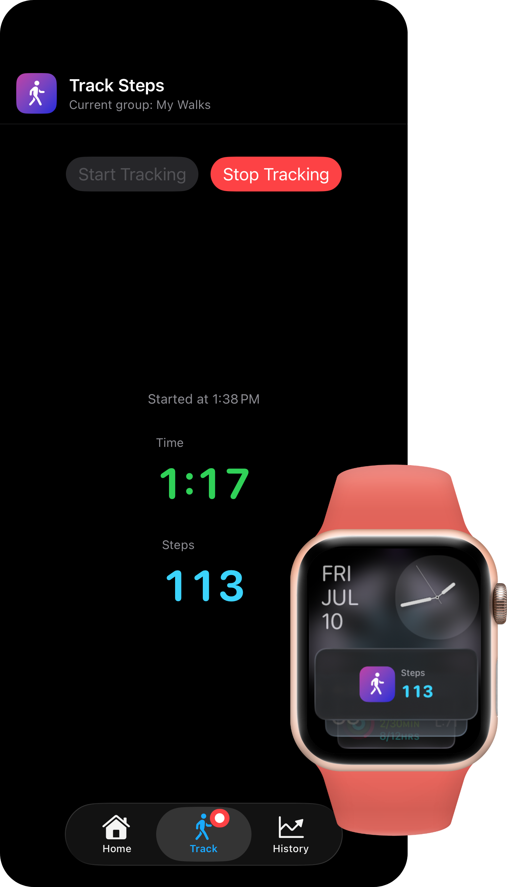
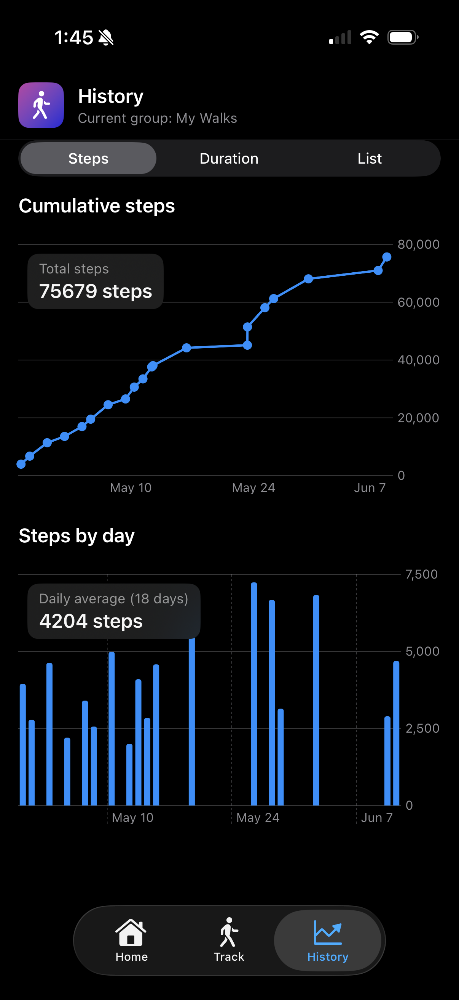

Highlights
Organize by group
Create named groups for different step-tracking routines like commutes, hikes, or family walks.

Live tracking
Track elapsed time and step count in real time while your session is active.

Visual history
Review cumulative trends and daily totals through list and chart views.

FAQ
Does Step Collector work without an internet connection?
Yes. Everything runs on-device — no network connection is needed to track, save, or review your walks.
Is it free? Do I need an account?
Yes, it's free to download with no in-app purchases. No account, login, or email address is required — just install and go.
Is my data backed up?
Walk history is included in your standard iCloud device backup if you have iCloud Backup enabled in Settings.
Why did you build this app?
I built it to track walks with my kids and give them something to work toward — like hitting 15,000 steps in a week to earn a trip to the boba store! I love the built-in step tracking offered by the Health app, and I use this to track my own daily step goals, but I wanted a way to track specific walk sessions with the kids and give them a way to see their progress.
Why does the step count on my lock screen or Apple Watch sometimes show "--" or stop updating?
iOS limits how often background updates can be delivered to the lock screen and Apple Watch to preserve battery life, so the step count only refreshes periodically even while the app is actively tracking. The "--" appears when the phone has been locked long enough that the system has paused Live Activity updates. Your steps are still being recorded — they'll be reflected as soon as you open the app.
Privacy Policy
Effective date: May 8, 2026
Your data stays on your device
Step Collector does not collect, share, or sell any personal information. Walk groups and session history are stored locally on your device. The app requests Motion and Fitness access to count steps during an active session. There are no accounts, no analytics, and no third-party SDKs.
If this policy changes, the effective date above will be updated.
Support
Step Collector is a small independent app. If you run into a problem, the please start by checking the FAQ above. If you still need help, please email me with a description of the issue and your device details. I read all support emails, but I may not be able to respond to every request individually.
Source Code
Step Collector is also available as a public GitHub repository. If you're interested in the implementation, would like to report a bug, or simply want to see how the app was built, you can browse the source code and open issues on GitHub.
Contact
Questions, bug reports, or feature requests? Email abbyskocodes@gmail.com.